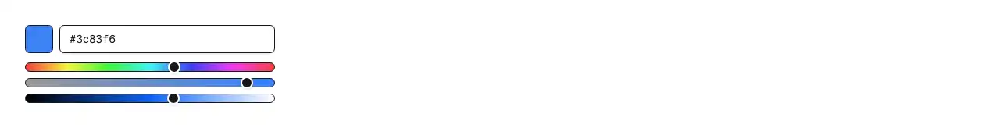

A colour picker built from a hex/rgb/hsl text box and native hue, saturation and lightness sliders, with optional alpha and preset swatches. Reach for it wherever a person chooses a colour rather than a designer does: a theme or appearance editor, brand and accent colours in app settings, design-token and CSS-variable editors, label/tag and project colours, calendar-event and category colours, chart series colours, highlight and annotation colours, avatar and workspace backgrounds, status and priority colours, a whiteboard or drawing tool's palette, and admin panels that store a colour on a record. Common asks it answers: "color picker", "colour picker", "hex color input", "color input field", "swatch picker", "hue slider", "rgb picker", "hsl picker", "alpha/opacity picker", "theme color editor", "react-colorful alternative", "react-color alternative", "shadcn color picker" — the control usually pulled in as react-colorful, react-color, @uiw/react-color or an ad-hoc <input type="color"> that gives you no keyboard story and no text entry. Official shadcn/ui ships no colour component of any kind: its slider is a Radix range primitive with no notion of colour, and input is a bare text box you would still have to parse and validate yourself. It settles the two things hand-rolled colour pickers get wrong. First, hue has to survive grey: with the hex string as the state of record, dragging lightness to 0 destroys the hue, so dragging back up returns red instead of the blue you started with — here h/s/l is the state and the hex is derived, so black still remembers it was blue, including under a controlled parent that echoes the value back. Second, a pasted hex has to come back out byte-identical: the conversion keeps full precision and rounds exactly once, so #123456 never drifts a digit just by being displayed (verified over all 16,777,216 sRGB colours). Beyond that: the box reads hex in all four widths (#abc, #abcd, #aabbcc, #aabbccdd, with or without the hash), rgb()/rgba() and hsl()/hsla() in both the comma and the modern space-with-slashed-alpha forms, and percentages wherever CSS allows them; out-of-range channels clamp and hues wrap the way a browser reads them, and blur rewrites the entry into canonical form so the reading is visible rather than silent. Text that cannot be read stays on screen to be fixed instead of being deleted, marks the field aria-invalid with a polite live message, and is withheld from onValueChange and from the hidden form input so nothing downstream has to validate twice. Colour names are refused by name rather than given a guessed value. The sliders are real range inputs, so arrow keys, Home/End and screen-reader value text come for free instead of being bolted onto a pointer-only saturation square; each is labelled and reports its own unit. Alpha is opt-in and round-trips through 8-digit hex; giving the field a name posts the colour through a hidden input; parseColor and formatColor are exported as plain functions for the rest of the app to share. One file, themed with shadcn tokens so it follows dark mode, no dependencies beyond React.

Rendered on the shadcn default neutral palette with harness-generated props.
pnpm dlx shadcn@4.21.0 add @pulld/color-picker
| licence | POINTER |
|---|---|
| primitive base | none |
| type | registry:ui |
| files | src/components/ui/color-picker.tsx |
| npm deps pulled | none beyond the pre-installed peer set |
| registry deps | — |
| semantic / palette / hex | 18 / 0 / 14 |
| writes shared ui/ | yes — can overwrite the project’s own primitives |